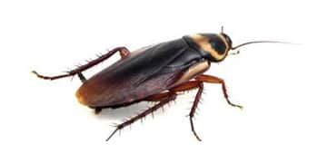

آیا تا به حال در نیمههای شب، با روشن کردن چراغ حمام یا آشپزخانه، با حشرهای درشت و سیاه رنگ مواجه شدهاید که با سرعتی باورنکردنی به سمت شکاف دیوار یا لولهها فرار میکند؟ اگر پاسخ شما مثبت است، احتمالاً شما با سوسک فاضلاب یا همان سوسک آمریکایی آشنا شدهاید؛ یکی از مقاومترین و آزاردهندهترین آفاتی که میتواند در خانههای شما زندگی کند.
سوسک فاضلاب که در زبان علمی با نام Periplaneta americana شناخته میشود، برخلاف اسمش اصالتاً آمریکایی نیست و ریشه آن به آفریقا بازمیگردد، اما امروزه در سراسر جهان، از جمله ایران، به یکی از رایجترین آفات شهری تبدیل شده است. این حشره با جثه بزرگ (۳۲ تا ۵۴ میلیمتر)، رنگ قهوهای متمایل به قرمز و وجود یک نوار زرد رنگ در پشت سرش، به راحتی قابل شناسایی است.
در این مقاله جامع از شرکت سمپاشی نانوفناوران بهداشت تهران، شما را با تمام جنبههای مربوط به سوسک فاضلاب آشنا خواهیم کرد؛ از شناسایی دقیق این آفت و تشخیص علائم آلودگی گرفته تا روشهای پیشگیری و مهمتر از همه، سمپاشی تخصصی و ریشهکنی اصولی این آفت با استفاده از پیشرفتهترین روشهای روز دنیا.
سوسک فاضلاب یکی از بزرگترین گونههای سوسکهای خانگی است که به دلیل زیست در محیطهای آلوده و حرکت مداوم بین فاضلاب و فضای داخلی ساختمان، یکی از اصلیترین عوامل انتقال آلودگیهای میکروبی محسوب میشود. این حشرات بیضی شکل و پهن بوده و هر دو گونه نر و ماده آن در فواصل کوتاهی میتوانند پرواز کنند.
سوسکهای فاضلاب برای سه دلیل اصلی وارد محیطهای انسانی میشوند:
شناخت مسیرهای ورود این آفت، کلید اصلی موفقیت در کنترل آن است. مهمترین راههای ورود عبارتند از:
| مسیر ورود | توضیح |
|---|---|
| دریچه فاضلاب (منهول) | سوسکها از سوراخهای دریچههای فلزی فاضلاب خارج شده و به سمت منازل حرکت میکنند |
| لولههای فاضلاب بدون سیفون | سیفون به عنوان سدی در مقابل سوسکها عمل میکند و نبود آن راه را برای ورود باز میکند |
| هواکش فاضلاب (ونت) | لولههای هواکش بدون توری یا حفاظ، مسیری مستقیم برای ورود سوسکها از بام ساختمان هستند |
| سیفون خشک شده | در صورت عدم استفاده طولانی مدت، آب سیفون تبخیر شده و سوسکها میتوانند از آن عبور کنند |
| شکافهای دیوار و کف | سوسکها از کوچکترین شکافها و درزها عبور میکنند |
تشخیص زودهنگام آلودگی میتواند از گسترش آن جلوگیری کند. مهمترین علائم حضور سوسک فاضلاب عبارتند از:
سوسکهای فاضلاب نهتنها از نظر ظاهری آزاردهنده هستند، بلکه تهدیدی جدی برای سلامت محسوب میشوند:
سوسکها میتوانند ناقل باکتریها، ویروسها و بیماریهای زیر باشند:
نحوه انتقال بیماری: سوسکها با حرکت در محیطهای آلوده و سپس نشستن روی مواد غذایی، ظروف و سطوح آشپزخانه، عوامل بیماریزا را منتقل میکنند. میکروبهای موجود در بالها، شاخکها و دستگاه گوارش سوسکها به راحتی به محیط منتقل میشوند.
پیشگیری همواره بهترین راهکار در مقابله با سوسک فاضلاب است. با رعایت این نکات، میتوانید از ورود این آفت به منزل خود جلوگیری کنید:
سوسکها به محیطهای مرطوب جذب میشوند. با کاهش رطوبت منزل، میتوانید از جذب آنها جلوگیری کنید:
برخی روشهای طبیعی میتوانند به دور کردن سوسکها کمک کنند:
پس از مشاهده آلودگی، میتوانید از روشهای زیر برای کنترل آن استفاده کنید. توجه داشته باشید که این روشها معمولاً برای آلودگیهای محدود مؤثر هستند و در صورت گسترش آلودگی، نیاز به سمپاشی تخصصی خواهید داشت.
⚠️ هشدار: استفاده از گازوئیل یا مواد نفتی برای سمپاشی سوسک فاضلاب به دلیل خطرات ایمنی و زیستمحیطی به شدت ممنوع است و توصیه نمیشود.
اگر با وجود رعایت نکات پیشگیرانه و استفاده از روشهای خانگی، همچنان با مشکل سوسک فاضلاب مواجه هستید، زمان آن رسیده که از یک خدمات سمپاشی تخصصی بهره ببرید.
چرا روشهای خانگی به تنهایی کافی نیستند؟
شرکت سمپاشی نانوفناوران بهداشت تهران با بیش از یک دهه تجربه و مجوز رسمی از وزارت بهداشت، خدمات تخصصی سمپاشی سوسک فاضلاب را به صورت تضمینی ارائه میدهد:
کارشناسان ما با بررسی کامل محیط، منبع اصلی آلودگی را شناسایی میکنند. این بررسی شامل منهولها، مجاری فاضلاب، نقاط ورود و محلهای تخمگذاری سوسکها میشود.
ما از ترکیبی از مؤثرترین سموم برای از بین بردن سوسک فاضلاب استفاده میکنیم:
| نوع سم | ویژگیها |
|---|---|
| پیرتروئیدها (ریونج، آکواپای) | مؤثر بر سوسکهای فاضلاب، اثرگذاری سریع، دارای ماندگاری طولانی تا ۱۸۰ روز |
| ریپلزال | ترکیبی از قویترین حشرهکشها با اسید بوریک، فاقد رنگ و بو، مناسب برای انواع سوسکها |
| سموم لاروکش | برای از بین بردن تخمها و پورههای سوسک که بسیار مقاوم هستند |
الف) سمپاشی مهپاش (ULV - مه افشان)
در این روش، سم به صورت ذرات ریز مه (مه سرد) در فضای محیط و مسیرهای فاضلاب پاشیده میشود. این ذرات ریز توانایی نفوذ به کوچکترین شکافها، درزها و مسیرهای فاضلاب را دارند و تمام سوسکهای پنهان را از بین میبرند.
ب) سمپاشی در مجاری فاضلاب (روش سهجبهه)
برای ریشهکنی کامل سوسک فاضلاب، سه جبهه هدف قرار میگیرند:
ج) طعمهگذاری (Gel Baiting)
طعمههای ژلحاوی سم به صورت استراتژیک در مسیرهای تردد سوسکها قرار داده میشود. سوسکها این طعمه را به لانه برده و باعث آلوده شدن و نابودی کل کلونی میشوند.
در زمان سمپاشی، آب ساختمان به مدت چند ساعت قطع میشود تا سموم بتوانند در مجاری فاضلاب و لولهها باقی بمانند و اثرگذاری کامل داشته باشند.
پس از سمپاشی، محیط به مدت ۴ تا ۶ ساعت بسته میشود تا سموم اثر کنند و سپس با تهویه کامل، محیط برای حضور افراد ایمن میگردد.
پس از اتمام عملیات، کارشناسان ما نکات لازم برای جلوگیری از بازگشت مجدد این آفت را به شما آموزش میدهند.
انتخاب زمان مناسب برای سمپاشی، تأثیر مستقیمی بر موفقیت عملیات دارد:
اواخر بهار تا اواخر تابستان (اردیبهشت تا شهریور) بهترین زمان برای سمپاشی سوسک فاضلاب است. در این بازه زمانی فعالیت و تولیدمثل سوسکهای فاضلاب در اوج خود قرار دارد و سمپاشی در این زمان به شما کمک میکند تا تعداد زیادی از سوسکهای بالغ و تخمهای آنها را از بین ببرید.
صبح زود یا اواخر شب بهترین زمان برای سمپاشی است، زیرا در این زمان سوسکها در پناهگاههای خود هستند و سموم بیشترین اثر را روی آنها دارند.
خانه شما فقط یک بار در سال، ترجیحاً در اوایل بهار، و قبل از زمانی که هجوم آفات مشکلساز شود، باید سمپاشی شود. رعایت یک برنامه سمپاشی سالانه میتواند به صورت تضمینی شما را از شر سوسکها خلاص کند.
هزینه سمپاشی سوسک فاضلاب به عوامل زیر بستگی دارد. برای دریافت مشاوره رایگان و استعلام دقیق هزینه، با کارشناسان ما تماس بگیرید:
| عامل | تأثیر بر هزینه |
|---|---|
| مساحت محیط | هرچه محیط بزرگتر باشد، هزینه بیشتر است |
| شدت آلودگی | آلودگی شدید نیاز به عملیات گستردهتری دارد |
| نوع ساختمان | آپارتمانهای چند واحدی نیاز به هماهنگی و عملیات گستردهتر دارند |
| دسترسی به نقاط آلوده | سمپاشی منهولها و مجاری فاضلاب هزینه را افزایش میدهد |
| نوع روش کنترل | سمپاشی مهپاشی، طعمهگذاری یا ترکیبی |
خیر، سموم استفادهشده توسط شرکت نانوفناوران (پیرتروئیدها) با رعایت کامل استانداردهای بهداشتی انتخاب میشوند. در هنگام سمپاشی، افراد و حیوانات از محیط خارج میشوند و پس از تهویه کامل، محیط کاملاً ایمن است. با این حال، افراد دارای بیماریهای تنفسی مانند آسم باید در زمان سمپاشی از محیط دور باشند.
اثر سمپاشی در سوسکهای بالغ فوری است و آنها به سرعت از بین میروند. با این حال، ممکن است طی چند روز همچنان سوسکهای جدید از لانهها خارج شوند که با تماس با سموم باقیمانده، از بین میروند. فرآیند ریشهکنی کامل معمولاً ۱ تا ۲ هفته زمان میبرد.
استفاده از اسپریهای خانگی معمولاً مؤثر نیست و فقط سوسکهای سطحی را از بین میبرد. همچنین استفاده نادرست از سموم میتواند برای سلامتی خطرناک باشد. روشهای تخصصی مانند سمپاشی مهپاشی و طعمهگذاری نیاز به تجهیزات و دانش دارد.
اگر محیط اصلاح شود، نقاط ورود مسدود گردند و نکات پیشگیری رعایت شود، احتمال بازگشت بسیار کم است. شرکت نانوفناوران خدمات خود را با ضمانت ارائه میدهد.
سوسک فاضلاب از طریق لولههای فاضلاب، سیفونهای خشک شده، دریچههای فاضلاب (منهول)، هواکش فاضلاب و شکافهای دیوار و کف وارد ساختمان میشود.
سوسک فاضلاب (آمریکایی) بسیار بزرگتر است (۳۲ تا ۵۴ میلیمتر)، رنگ قهوهای مایل به قرمز دارد و در محیطهای مرطوب مانند فاضلاب زندگی میکند. سوسک آلمانی (سوسک ریز کابینتی) کوچکتر است (۱۰ تا ۱۵ میلیمتر)، رنگ روشنتری دارد و بیشتر در آشپزخانه و کابینتها یافت میشود.
بله، هر دو گونه نر و ماده سوسک فاضلاب در فواصل کوتاهی میتوانند پرواز کنند.
سوسک فاضلاب یکی از مقاومترین و آزاردهندهترین آفات شهری است که میتواند خسارتهای جبرانناپذیری به سلامت و آرامش شما وارد کند. تشخیص زودهنگام و اقدام سریع، کلید جلوگیری از گسترش آلودگی است. در حالی که روشهای خانگی میتوانند برای آلودگیهای محدود مفید باشند، برای ریشهکنی قطعی و تضمینی، استفاده از خدمات تخصصی ضروری است.
شرکت سمپاشی نانوفناوران بهداشت تهران با بهرهگیری از دانش فنی روز، تجهیزات پیشرفته و سموم استاندارد، آماده ارائه خدمات تخصصی و تضمینی در زمینه سمپاشی سوسک فاضلاب به شماست. تیم کارشناسان ما با شناسایی دقیق منبع آلودگی و استفاده از روشهای ایمن مانند سمپاشی سهجبهه و طعمهگذاری، محیطی امن و آرام را به شما باز میگردانند.
🚀 همین حالا اقدام کنید:
📞 تماس فوری: ۰۹۱۲۰۷۰۵۷۴۶
💬 درخواست مشاوره رایگان: از طریق واتساپ یا ایتا
🔗 مشاهده سایر خدمات: کنترل آفات مسکونی